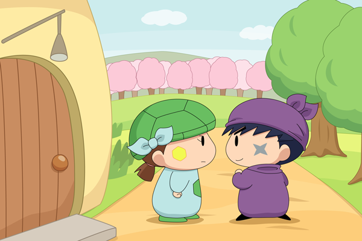

あまり長話をするとミオリが疲れてしまうと思い、二人はいったん家の外に出ました。
カメリ「あ～・・・、
サスケくん～、あそこを見て～」
サスケ「ん？」
サスケはカメリが指さす先を見ると、たくさんの梅の木が鮮やかなピンク色の花を咲かせていました。
サスケ「おぉ～、梅の木がたくさんあるぜ・・・！」
カメリ「さっきは～気がつかなかったけれど～、こんなに～近くで
梅のお花が～たくさん咲いていたんだね～・・・」
カメリがそう言うと、二人ははっと顔を見合わせました。
二人は気づいたのでした。
ミオリは一歩も外に出ることもできないほどの重い病気にかかっていることを。
カメリ「ミオリさんに～この梅のお花を～見せてあげられればいいのに～」
サスケ「あきらめちゃだめだぜ。
オイラたちで何かできることはないか探してみるぜ！」
カメリ「うん～！」
二人は梅の並木に向かって歩き始めました。
のんびりな二人なので、話が全然盛り上がらないです（二人のせいじゃなくて展開に問題ありだと思いますが）。アニメだとたった１０分くらいで終わるようなショートストーリーを長々と連載しているからなぁ。もう少しペースアップさせていかなくては…。
いつもゆるい表情のカメリですが、今回はちょっと気合いを入れさせてみました。妖精の気合いの入った表情って私は好きだったりします。
(2013/9/6)